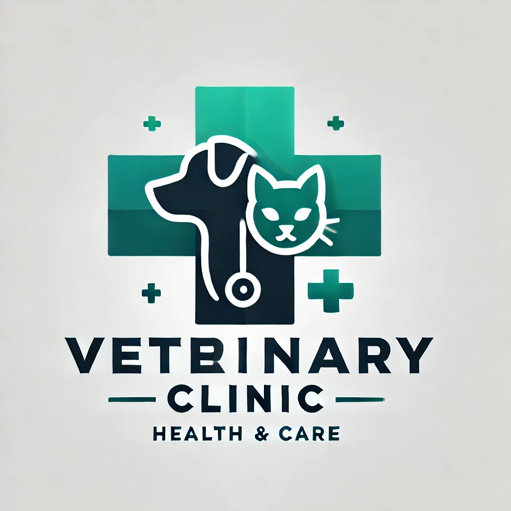

| Nuestros preciados colaboradores | ||
|---|---|---|
| Torremolinos Vet  |
Veterinario Gomez |
Clinica Mascota Feliz |
| Nos especializamos en el cuidado exclusivo de gatos, brindando un ambiente tranquilo y adaptado a sus necesidades. Desde chequeos de rutina hasta tratamientos especializados, nuestro equipo veterinario está comprometido con la salud y el bienestar de los felinos. |
Somos una clínica especializada en cirugía y procedimientos avanzados para mascotas. Contamos con tecnología de última generación y un equipo altamente capacitado para garantizar intervenciones seguras y una pronta recuperación. |
Ofrecemos atención veterinaria completa para todo tipo de mascotas. Desde medicina preventiva hasta hospitalización y rehabilitación, trabajamos con pasión y compromiso para brindar el mejor cuidado a nuestros pacientes. |